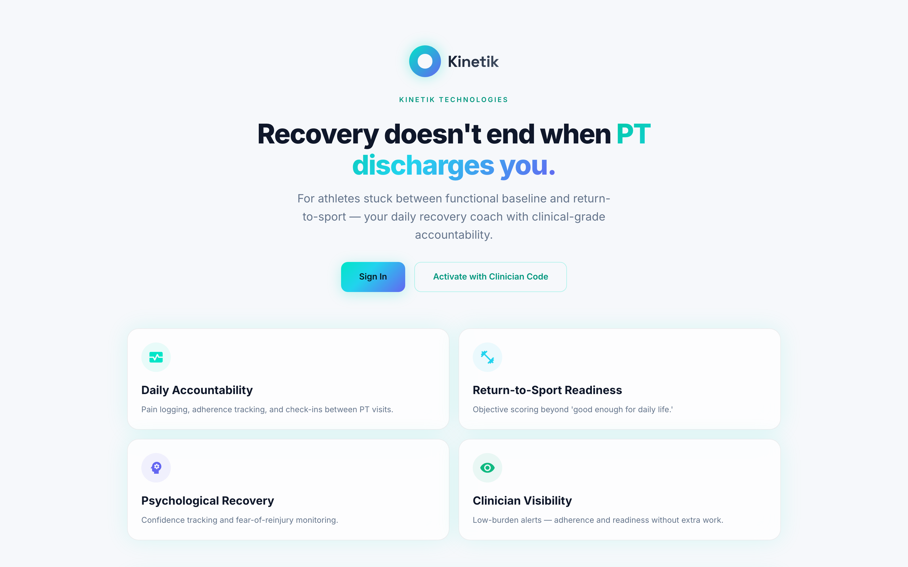

Kinetik
Co-Founder & CPO · Berkeley, CA · Jan 2026 – Present
Hosted on a free tier — the first load can take up to a minute while the server wakes up.

Kinetik started as a project for my SCET class at Berkeley, where the assignment was to find a problem worth building a startup around. It didn't stay a class project. We landed on remote physical therapy — specifically the part of recovery that happens unsupervised, where a patient is at home doing exercises with no way for anyone to know whether the form is right or whether they're actually improving.
Before writing any code we ran over 50 interviews with patients, clinics, and lawyers. I went out to the Stone Clinic and lab to talk to people on both sides of the problem — clinicians and patients — because the two groups describe the same failure completely differently. Patients talk about not knowing if they're doing it right. Clinicians talk about having no visibility between appointments. Those are the same gap viewed from opposite ends, and hearing both is what shaped the product.
I also handled the legal and financial research — insurance policy structures and medical reimbursement — because in healthcare that isn't back-office detail, it's the thing that determines whether a product can exist at all. A feature nobody can bill for doesn't ship. At the end of the class we pitched to VCs and took second place.
Since then I've been building the software. The application is a full-stack Next.js, Fastify, and PostgreSQL app deployed to production on Render and Neon, so there's a live, publicly accessible demo that needs zero local setup — anyone can open it and use it, which matters enormously when you're trying to get feedback from clinicians who are not going to clone a repo.
The piece I'm proudest of is the real-time computer vision: using Google's MediaPipe Pose Landmarker to auto-count exercise reps straight from a webcam feed. It runs entirely client-side, which means it adds no server cost at all no matter how many patients use it. For an early-stage product with no revenue, an architecture decision that keeps marginal cost at zero is worth as much as the feature itself.
Around that I designed and shipped an end-to-end workout-tracking pipeline — a Prisma and PostgreSQL schema, a Fastify REST API, and a React interface — capturing per-exercise duration and post-session patient-reported outcomes. All of it surfaces on a clinician dashboard with automated high-pain alerting, so a patient reporting unusual pain gets flagged rather than sitting in a table waiting to be noticed. I also redesigned the UI across both the patient and clinician portals for visual consistency and usability.
Stack: Next.js · React · Fastify · PostgreSQL · Prisma · MediaPipe · Render · Neon